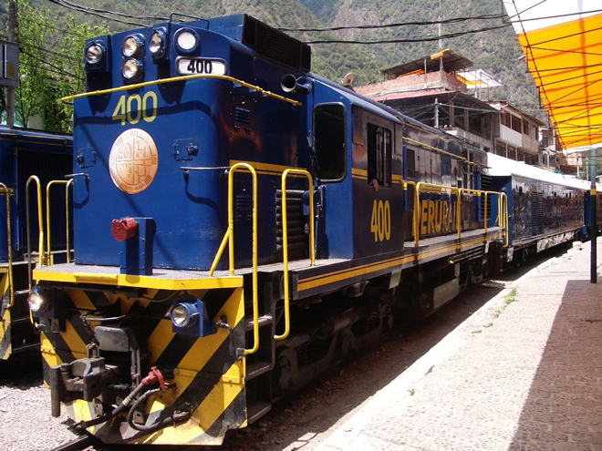
Settled by a few farm families in 1901, the settlement was transformed into a busy railway workers' camp called Maquinachayoq (possibly from Quechua makina - a borrowing from Spanish máquina) - "the one with a little machine, locomotive or train" during the construction of the railroad through there in the late 1920s. The town was the central hub for worker lodging and their equipment until the railway was completed in 1931. It was later called Aguas Calientes ("Hot Baths") after the colloquial Spanish name for the natural hot springs. Both the hot springs and the town itself were pretty grubby.
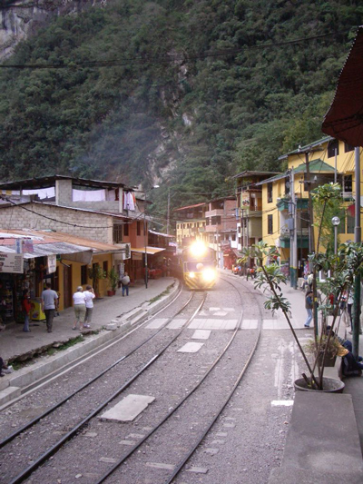
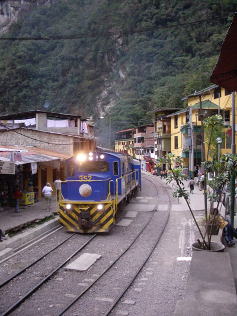
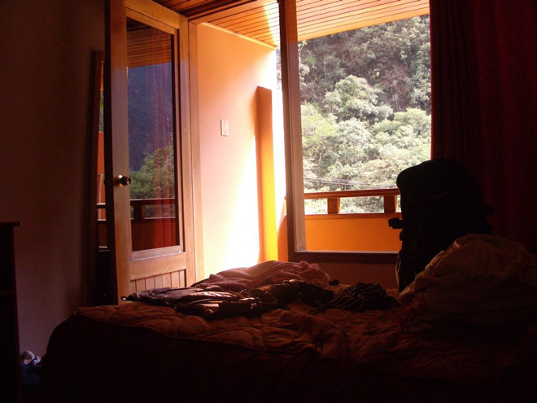
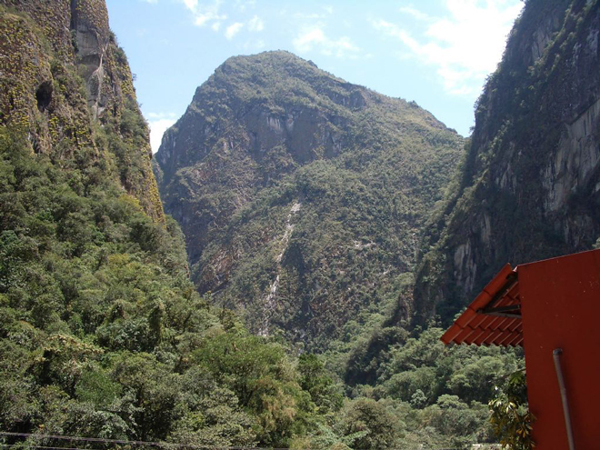
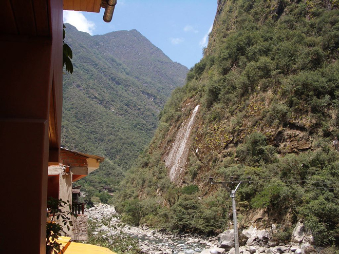
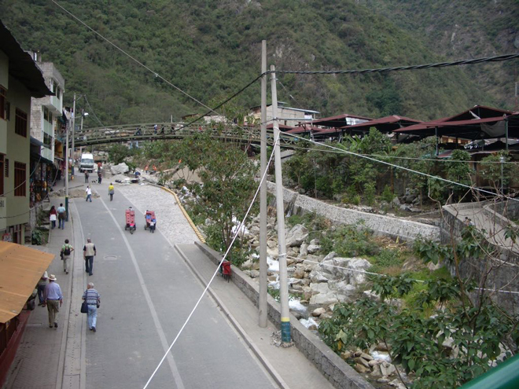
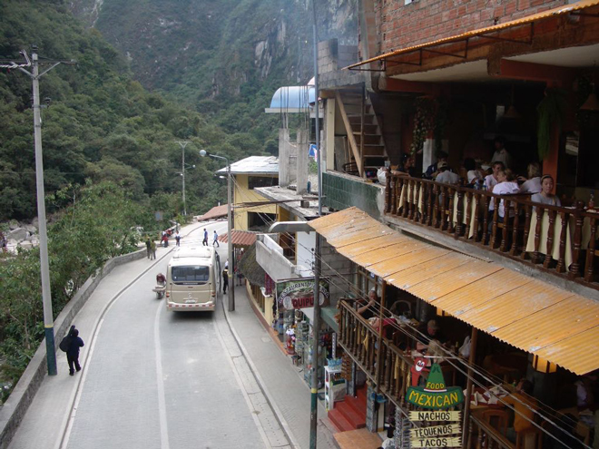
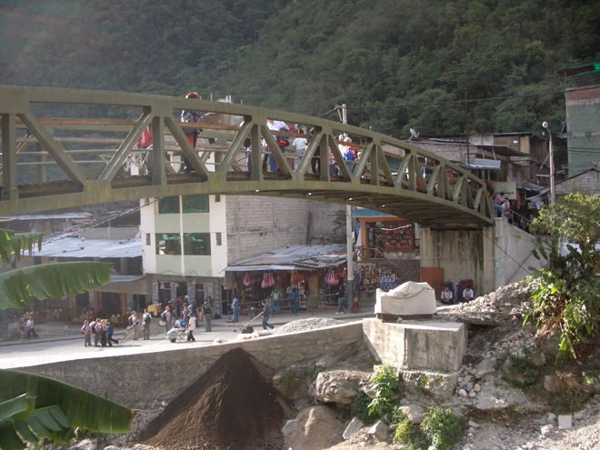
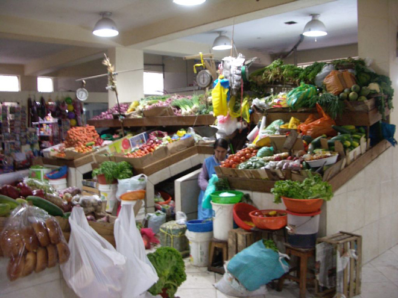
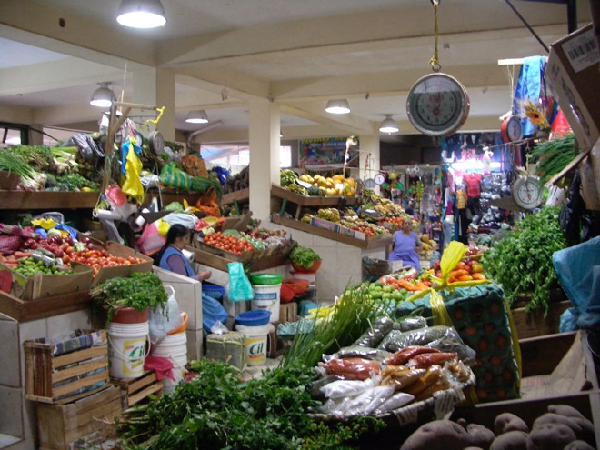
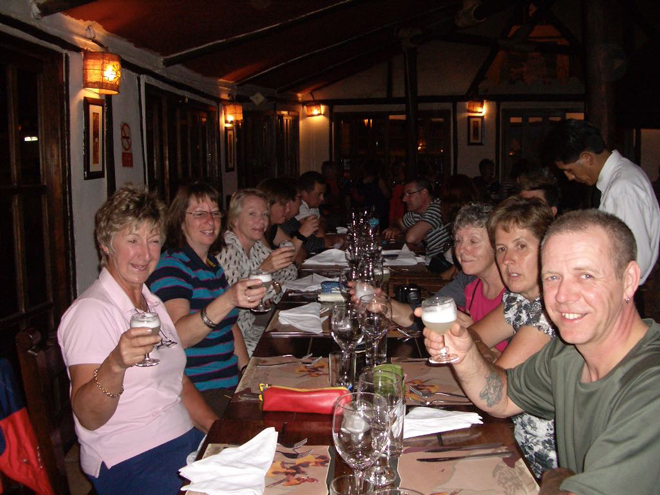
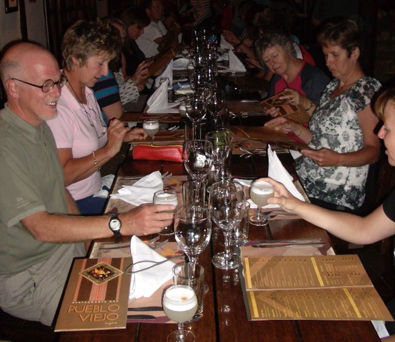
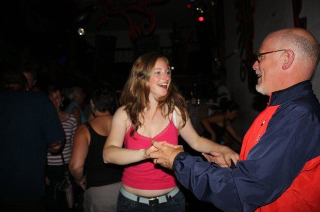
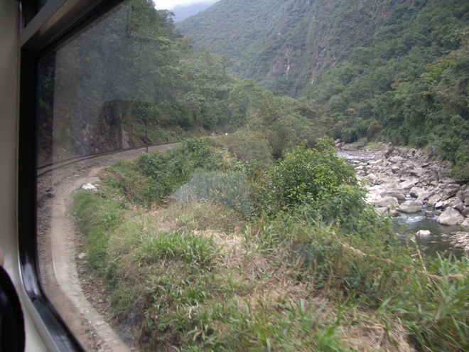
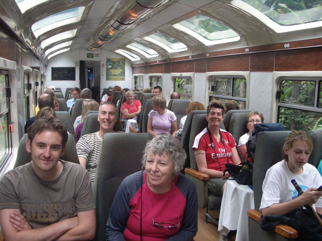
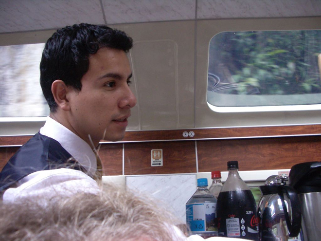
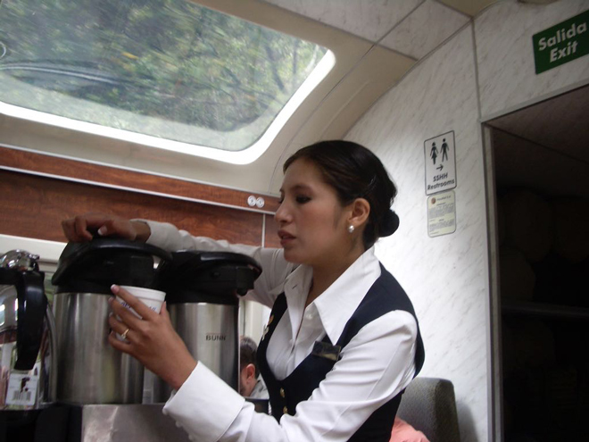
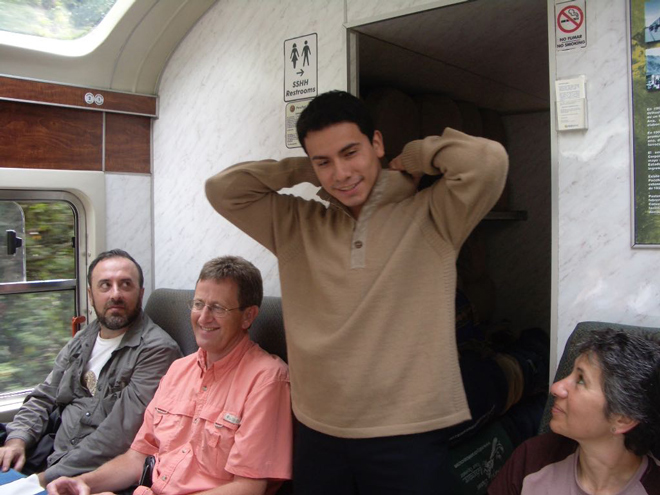
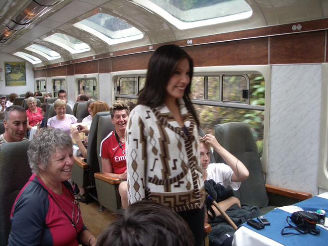
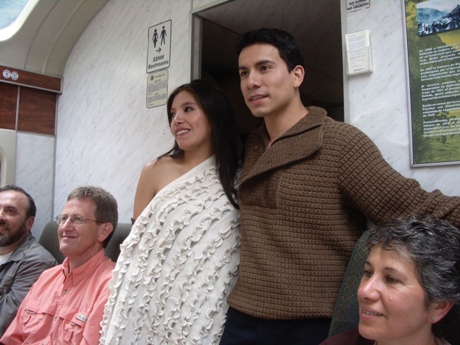
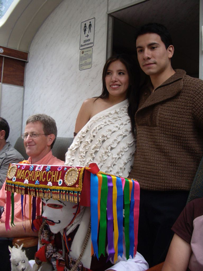
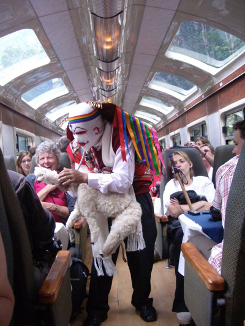
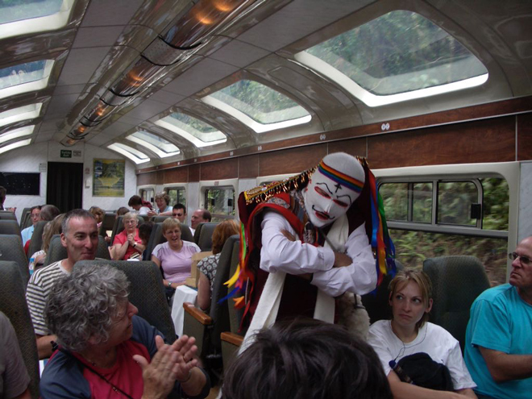
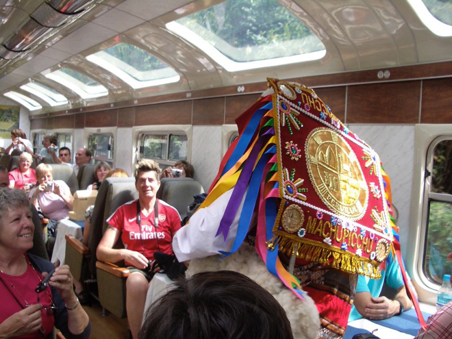
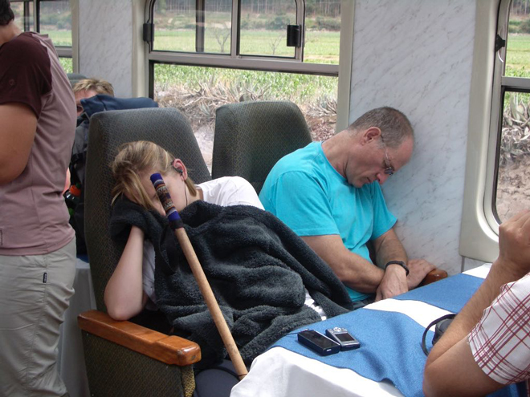
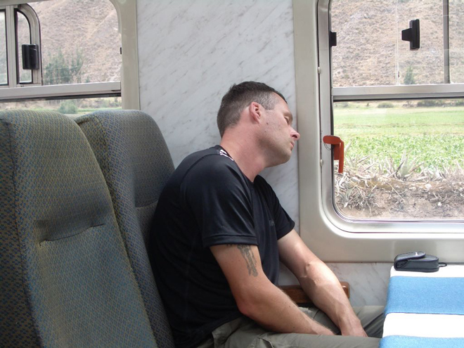